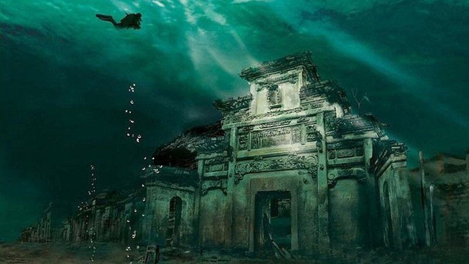
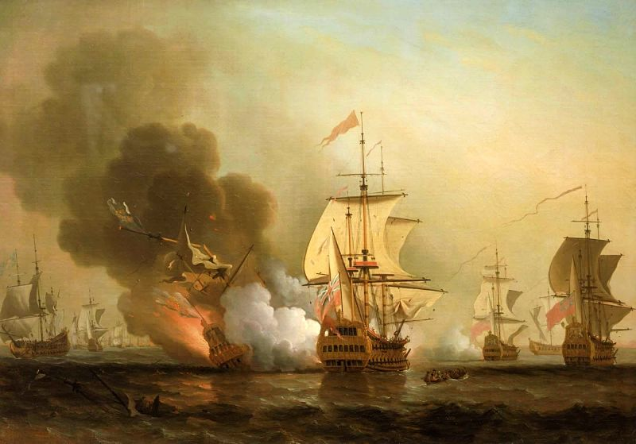
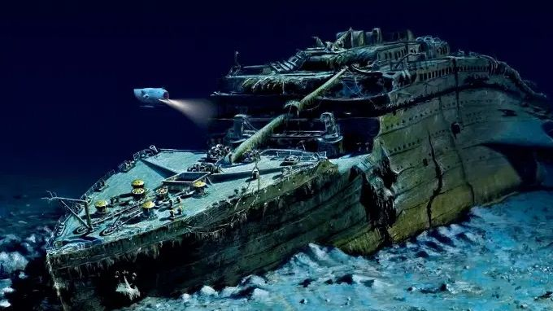

Lion City, a Atlantis chinesa
Anteriormente chamada Shi Cheng, foi um importante centro político, construído no século 1, durante a Dinastia Han Oriental. Mas, como essa cidade foi parar a 40 metros de profundidade de uma lagoa?
A resposta é que, em 1959, o governo chinês decidiu construir uma usina hidrelétrica no local, e para que isso fosse possível, foi feito uma lagoa artificial, onde se encontra a antiga cidade. Ela foi esquecida por cerca de 50 anos, até que, em 2002, arqueólogos decidiram usar um equipamento sonar para descobrir o que havia no fundo da lagoa. Porém, apenas em 2014 a descoberta da cidade foi realmente anunciada ao mundo, pois o governo chinês percebeu a importância do que haviam encontrado.
O que é mais chocante não é o fato da cidade apenas estar embaixo d'água, mas sim que ela está praticamente intacta. Suas construções estão inteiras, seus templos, arcos memoriais, as casas dos moradores, escadarias, tudo pode ser visto com muitos detalhes ao se aproximar.
Em 2017, a cidade foi aberta ao turismo, permitindo que pessoas mergulhassem para ver as maravilhas submersas.
Galeão espanhol San José
O navio espanhol, no fim de maio de 1708, deixou o Panamá em direção à Espanha, carregando um tesouro extraído do Peru, na época controlado pela Espanha. Esse tesouro seria entregue ao rei Filipe V, que utilizava recursos de suas colônias para financiar a Guerra de Sucessão Espanhola. Porém, a embarcação não chegou ao seu destino.
Mesmo sabendo que o caminho a ser seguido era perigoso, por ter britânicos montando guarda, o capitão do navio decidiu seguir a viagem, e, no dia 8 de junho de 1708, se iniciou uma batalha pelo tesouro do San José. Durante toda a batalha, o galeão se manteve firme e estava vencendo, mas em algum momento desconhecido, algo aconteceu e o navio perdeu a batalha, afundando junto seu tesouro de quase 20 bilhões de dólares e seus 600 passageiros, na costa da Colômbia.
Depois de tantos anos com o mistério de onde estava o navio, em 2015, o governo colombiano anunciou que havia descoberto sua localização, mas, nunca informaram onde exatamente o navio se encontra. Dizem que ele está localizado próximo às Ilhas Rosário, que fica a 40 km de Cartagena (local onde o navio afundou).
Atualmente, há uma disputa para decidir quem ficará com o tesouro do galeão. Entre os que desejam suas riquezas, estão a Espanha, uma nação indígena boliviana Qhara Qhara, a empresa americana de resgate Sea Search Armada (SSA), que diz ter encontrado o navio nos anos 80 e quer 50% do que há nele. Além disso, há também empresas interessadas em retirar o San José do fundo do mar e levá-lo a um museu, onde os turistas podem saber mais sobre sua história.
RMS Titanic
O famoso navio, no ano de 1912, zarpou de Southampton, Inglaterra, em direção a Nova Iorque, EUA, com 2223 passageiros a bordo, mas infelizmente não chegou ao seu destino. Na madrugada do dia 15 de abril de 1912, o Titanic afundou após colidir com um iceberg, deixando 1517 pessoas mortas.
O paradeiro do navio, o que aconteceu durante seu naufrágio e os detalhes sobre o que aconteceu naquela madrugada ficaram sendo um mistério por mais de 80 anos, até que em 1985, uma equipe de oceanógrafos, comanda por Jean-Louis Michel e Robert Ballard, depois de falhar em uma de suas tentativas, conseguiu encontrar os destroços do navio, a aproximadamente 3800 metros de profundidade. A equipe cuidou também da documentação do navio, com fotos e filmagens do que restou dele.
Essa documentação foi de extrema importância para se entender o que ocorreu com o navio. Por exemplo, até então não se sabia que o navio havia se partido ao meio. Informações como essa doram obtidas após o navio ser encontrado. Além disso, essa descoberta também serviu como base para o filme "Titanic", de 1997, que mostra como o navio afundou.